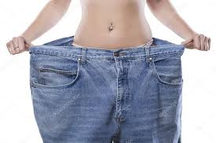
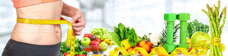

Fogyni lehet testmozgással és diétázással is.
A testmozgással gyorsabban lehet fogyni de nagyobb erőbefektetés kell hozzá mint a diétázáshoz.
A diétézáshoz pedig nagyobb akaraterő kell hogy egyes ételek csábításának ellen tudj állni.
És lehet a testmozgást meg a diétázást együtt is csinálni annak van a legnagyobb hatása, ez az egyik legyorsabb természetes fogyási lehetőség is.
Testmozgás:
| Hétfő | Kedd | Szerda | Szerda | Csütörtök | Péntek | Szombat | Vasárnap | ||
|---|---|---|---|---|---|---|---|---|---|
| Reggel Intenzív futás 30-40 perce Intenzív szobabicikizés 1 órá Intenzív futás 30-40 perce Intenzív szobabicikizés 1 órá Intenzív futás 30-40 perce Intenzív szobabicikizés 1 órá Intenzív futás 30-40 perce | Pihenő nap | ||||||||
| Délután | Intenzív futás 20 percet | utána egyből hanyadtfekvésben tartás 15mp | bicska 10db ülőtartás 15mp | ablaktörlő 5-5 oldalanként 10kör pihenés nélkül | Minden nap. |
Diétázás:
| Hétfő | Kedd | Szerda | Szerda | Csütörtök | Péntek | Szombat | Vasárnap |
|---|---|---|---|---|---|---|---|
| Reggeli | |||||||
| Ebéd | |||||||
| Vacsora |
